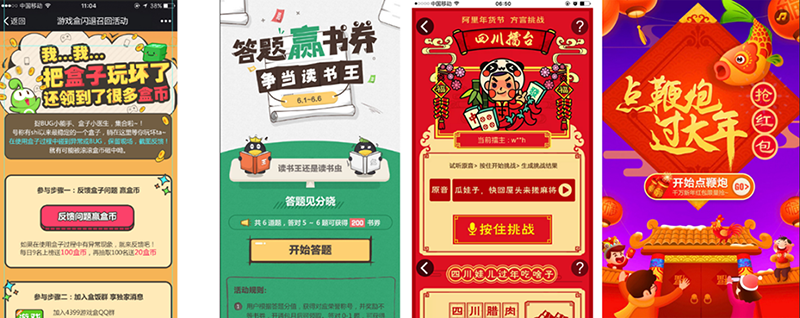
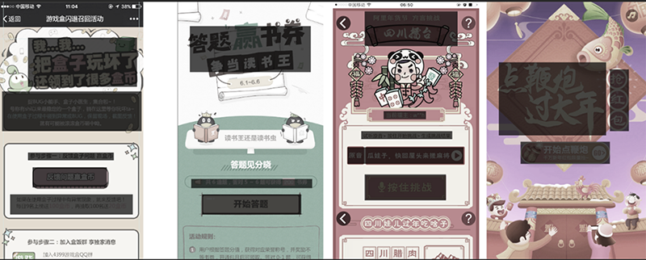
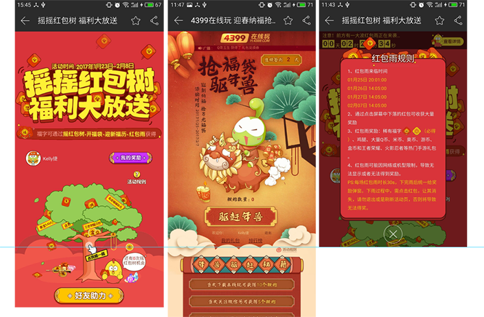
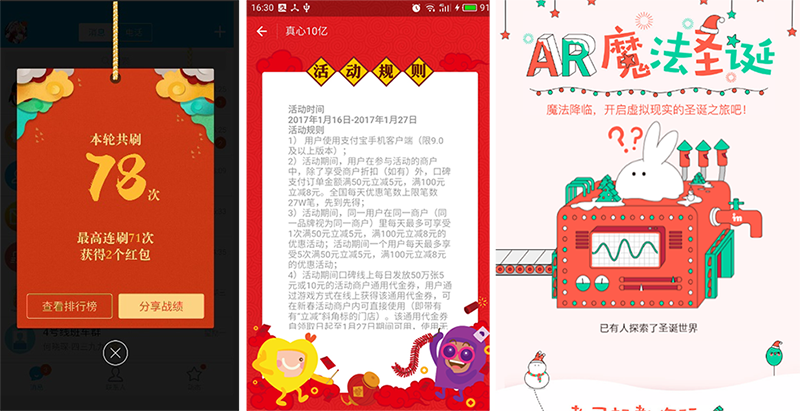
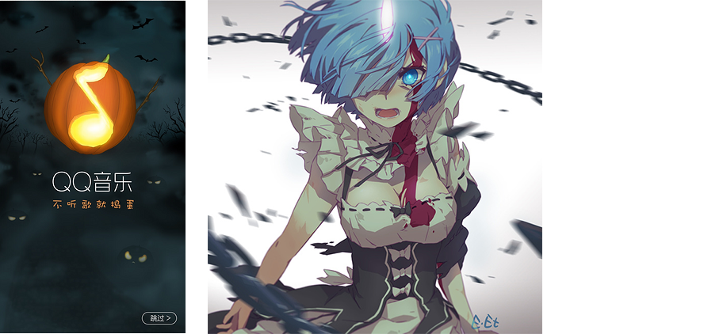
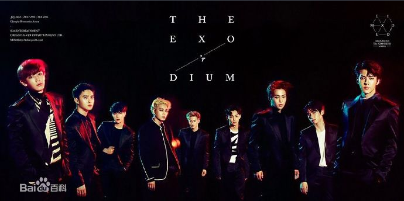
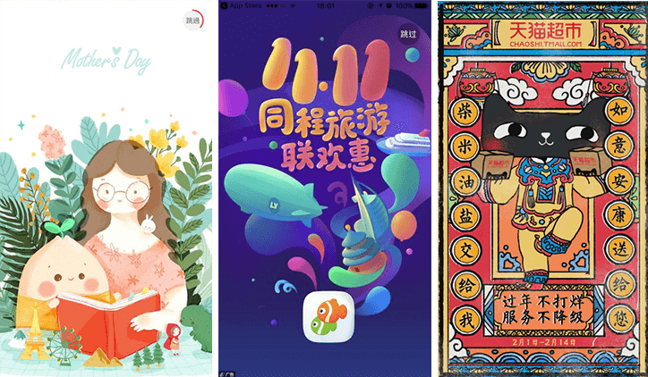
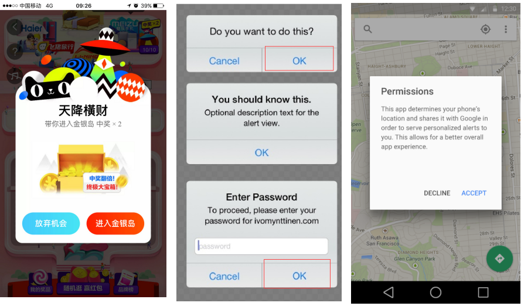
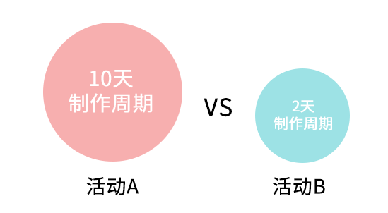

活动有个明显的区分（内容、投入等）——重点活动和常规活动
原因： 根据以往的活动经验和总结来看，趣味性强、操作简单、门槛低、活动回报率高的活动效果比较显著
建议： 重点活动可以从这个点上去入手提高活动的参与度，可以借鉴H5和一些简单的小游戏玩法，简化操作流程。投入更多的时间来精心打造，搞创新、玩花样、注重活动吸引力
收益、宣传效果高的活动，多花资源，达到更好的效果
建议： 可降低制作成本的活动：活动淡季为了调动活跃数的活动，主要还是以简单、活动噱头为主来吸引用户，空余更多的时间做旺季大活动。
降低常规活动成本：相似的活动模板化，组件、模块的复用（素材、结构布局等），设计的一致性
后面也可以通过组合模块来快速搭建活动
可模板化的活动：
案例①： 游戏盒年终活动——活动推出时间为淡季，活动结果显示效果还不错，但是如果将这种工程量比较大的活动增添更多的趣味性放置在更为合适的时间，效果是不是会增加好几倍？
案例②： 王祖蓝直播活动——该活动动的内容本身是很大的一个噱头，因而即使画面效果没有很出众，但是最终的活动效果却是显著的，而且这种活动的制作周期短。
就像电影排期一样，有精致的特效大片和反响一般的影片在上线，合适的时间播放符合观众口味的电影才能使得影片达到更高的收益，活动也是一样，如果在活跃度较高的时间段上线那些吸引力更好的活动是不是也可以使活动带来更好的效果。
可延续的游戏：
很多活动有很好的点子，在幸苦开发了很多天之后，上线几天后下线了，就再也没有用了。
一个游戏如果反响好，厂商就会考虑开发游戏的续篇。续篇会在前作的基础上，保留系统的核心，改进不合理的地方，优化用户体验，增加新的内容和玩法。往往反响会越来越好。
第一次总是踩坑的时候，会出现各种问题，但在不断地改进中，就会做出更有意思的东西。


原因： 目前是做过不少活动页面，首屏放置的信息量较大，通过上面的几张图片的对比不难看出，文字信息太多不仅会使得整个画面信息堆积感比较强烈，同时也会造成用户难以在最短的时间内抓住重要的信息，造成重要信息获取的阻碍。
建议： 是不是可以考虑下对标题、描述等文字进行取舍优化，信息层级区分，突出重点信息，减少重复性描述，方便用户提取重要的信息。当然我们设计这边也要根据文案的重要性加强排版能力，增加首屏趣味性的延展空间。

现状： 活动按钮首页显示、冗长的排行版、关闭按钮不能放下弹窗下面分开排版。。。。。。
问题：
建议：
最先吸引用户的是标题以及活动的主体部分，如果用户能直观地了解到活动的大致情况，即时按钮不在首页也能促使用户触发下滑查看页面的操作，是否可以不必限制活动按钮一定要在首页显示的要求，对于活动按钮的位置根据画面来视情况而定，以突出标题和活动主体画面为主，优化画面整体的结构为优先级
对于活动内容较多的情况下，排行榜、活动规则等可选择以弹窗的形式出现，方便用户提取活动信息
降低对画面、弹窗等结构形式的限制，给设计留有更多的空间去发挥创意

排版方式的建议：
信息展现的方式不限于单纯的整页流式排版。
拆分背景与显示物体，通过动效吸引用户
不是单纯的图片：标题动效
页面性能:资源加载、显示时间、流畅性
前端能够实现的效果



原因：
文化环境更加的多元化，小朋友对信息的包容性和接纳性可能没有我们自身想象的那么狭隘，不少学生也爱看暗黑系的动画、跑男等TV综艺节目
游戏盒用户玩的游戏多，风格多样，接受程度高
建议： 是否可以减少风格上的局限性，打破对以往学生的喜好偏见，去做更多不一样的画风尝试，增加画面上的新颖性？
利用话题效应
我们的活动属于移动端，在移动端应用都在研究交互以提高用户体验感的大环境下，如果活动也能遵循交互设计的理论，更多地考虑用户体验的问题，就能让用户更好地融入到活动中去，而不用去过多地思考这个活动怎么玩，我下一步要怎么做？减低用户对操作的学习成本
示例：

iOS和安卓系统中，我们看到的都是具有倾向性的想让用户去操作的放在右边，比如确认放在右边，取消放在左边，倾向性操作的按钮还出现有加速或者颜色比较突出的处理以引导用户去操作。
对比用户使用手机的场景不难知道对于右手的操作会比较频繁顺畅点，虽然根据阅读顺序是优先看到左边的按钮，但由于按钮的视觉层级相对较高，当出现多个按钮的时候用户难免会不自觉的依次看过去，按钮放在右边是不是就更方便于用户的操作。
交互逻辑
过渡效果
交互效果
友情的提示
更多的交互方式
现状弊端：
活动断层大，机械式地流水线的制作流程不足以将运营、设计以及程序的各自专业优势相结合起来。意见分歧大，局限性性也比较大建议：
重点活动策划之初可以考虑让设计和前端可以介入
设计和程序都可以提供一些想法，而前端还可以提供技术支持
提案的时候如果涉及到多场面的复杂切换，设计也可以出草图帮助理解
运营可以更多的是注重内容的表现，设计是形式的创新，前端也可以做一些与以往不一样的没做过的尝试来提升自己的能力，实现“三方共赢”
前期的技术调研
活动制作周期相对来说是比较短的。在有想法之前，就可以跟技术讨论方案的可行性，前端这边也许会提供更好的方案。
前期也可以提供很多技术方案和建议。不至于设计定稿了才发现问题，在返回修改。
原因：
建议：
是否可以从活动策划之初就可以先定人员建立讨论组
可以在讨论组里面实时通报活动进程，在组里发布设计定稿、测试链接等阶段性成果，使得活动的策划、设计、测试、上线以及后期总结的进展情况都可以通过活动讨论组知晓
前端页面预览
页面交互逻辑
原因：
根据获得的活动总结来看，总结的基本上是对单个活动的数据对比分析，基本上统计的是上线后的情况，如果只是从单个活动来看的话应该就像是将自己这次的考试成绩和前几次的考试成绩对比起来，如果没有综合考虑其他人的考试成绩一起对比的话，就难以判断出自己是优是良。同理，如果没有从多方面角度去对比考虑的话可能得出的结果会有偏差或者说有一定的狭隘性。
建议：
因此我们的建议是在总结的时候也可以考虑加入制作成本的因素，而不是单纯的从单个活动的用户参与量和整个活动效果来权衡。
对比效果相同的活动做出综合性的活动判断
对比同类性质的活动效果，可分析出不同的活动方式对同一种性质活动的效果影响，进而能发现更好的的活动方式
大家都是想用最省力的方式去达到更好的效果吧。如果需要花费更多的时间和精力去做的事，那必定会希望自己所投入的能带来更大的效益。
效果同样是100W PV的活动 ，10天制作周期的活动A可以算是效果好的活动吗？
